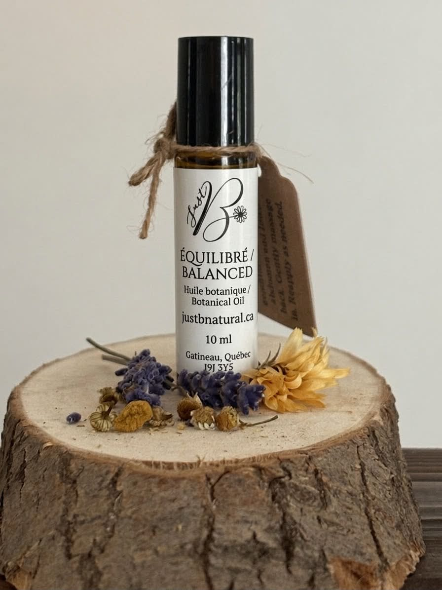

Handcrafted in Gatineau, Québec
Balanced

A gentle, soothing botanical oil designed for lower-abdominal massage and comforting self-care throughout your cycle.
Ingredients
Grapeseed Oil, Organic Essential Oils (Geranium, Lavender, Roman Chamomile, Frankincense), All-Natural Vitamin E.
Browse all products